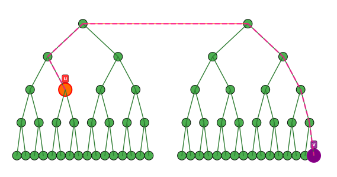

想着写点什么东西，就是说，不会被归入知识点（upd：并非不会），却又感觉很常用（upd：并非常用）的东西。
哦我懂了，通常来说我们管这个叫 trick。
DS
容易记错的操作复杂度：
- 线段树合并、线段树建树：\(O(n)\)。
- FHQ Treap 建树：视作笛卡尔树，\(O(n)\)。
- 动态开店线段树单次访问至多增加 \(4\log\) 个点，e.g. \([2,n-1]\)。
随机序列的笛卡尔树：
是 Treap。
有『合并』功能的 DS：
并查集，线段树，字典树，笛卡尔树，BST。
复杂度依赖『均摊』的 DS：
并查集，线段树 / 字典树合并。
不强制在线 复杂度不依赖均摊 的可持久化数据结构 \(\to\) DAG 上直接模拟。
部分可持久化：
只要求『在最新版本上修改』和『查询所有版本』的可持久化数组可以在 vector 上二分，又唤部分可持久化。
字典树维护二进制操作：
字典树的节点 id 可视作对信息的引用，也即，如果在初次插入时记录了某个元素对应的 id，相当于获取了元素的引用。
- 单点修改：拿出来，修改，塞进去，单次修改 \(O(\log V)\)。
- 全局
xor：打懒标记，单次修改 \(O(1)\)。 - 全局 +1 / -1：字典树上信息必须从低位到高位存储。现场处理，（发现只会递归一条链），单次修改 \(O(\log V)\)。
线段树可维护的经典信息：
操作：插入 / 删除区间，询问：值域内未被覆盖的点的信息：
线段树维护节点内被覆盖次数最小值和最小值信息；当最小值为 \(0\) 时，将信息纳入统计。
扩：维护值域内恰好被区间覆盖 \(k\) 次的点的信息：线段树维护节点内前 \(k+1\) 小值的信息，则 \(k\) 一定出现在前 \(k+1\) 小值中。线段树维护函数：如果对于任意区间，都能定义一个定义域为该区间的函数，可以线段树维护该函数。维护的总点数是 \(n\log n\) 的。
维护 \(\sum\limits_{i\in[L,R]}\sum\limits_{j\in[i,R]}\min\{a_{i\sim j}\}\)：
考虑单调栈，则只需做 \(O(n)\) 次区间修改。
goto CF2009G3。
数学
常见数据对应的数列：
- \(\{1,1,2,3,5,8,\cdots\}\) 是斐波那契；矩阵可以优化；生成函数可以找通项；\(f_i=\sum\limits_{i=0}^nC_n-i^i\)。
- \(\{1, 1, 2, 5, 14\cdots\}\) 是 Catalan，走网格不能穿过对角线 / 构造二叉树方案数 / 一群人买电影票。有组合求法 \({2n\choose n} - {2n \choose n - 1}\)；生成函数还是可以找通项；
- \(\{3, 7, 6, 15, 25, 10, 31, 90, 65, 15, 63, 301, 350, 140, 21, 127, 966,\cdots\}\)，中间插着一堆 \(1\)，是展开了的第二类斯特林数三角形，把 \(n\) 个不同球，不空放，放到 \(k\) 个相同盒子的方案数，有递推式 \(S(n,k)=S(n-1,k-1)+k\cdot S(n-1,k)\) 和二项式反演出来的通项 \(S(n,m)=\sum\limits_{i=0}^m\dfrac {(-1)^{m-i}\cdot i^n}{i!\cdot (m-i)!}\)。多项式可以 \(n\log\) 算同一行 / 列，方法不太一样。
\(n\) 被取模后的组合数：
将原式展开，\(\binom nm=\frac 1{m!} \prod\limits_{i=0}^{m-1} (n-i)\)，容易发现 \(n\) 取模是没有影响的，如果模数很小则可以预处理模数范围内的阶乘，如果 \(m\) 很小则可以每次 \(O(m)\) 现算。
同理可以发现 \(m\) 是不能直接取模的，如果需要给 \(m\) 取模就只能用 Lucas。
\(O(V\log V)\) 求数的因数：
假设 \(n=V=5\times 10^6\)，那么对于每个数暴力分解就是 \(O(n\sqrt V)\) 的，无法通过。
埃筛预处理，存储每个数的所有因数就可以 \(O(V\log V)\) 求了。
求线段穿过直线系的次数：
求线段 \((x_1,y_1,x_2,y_2)\) 穿过直线系 \(x+y=k\cdots m(k\in \mathbb{N}^*)\) 的次数算出线段中 \(x+y\) 的取值范围也即 \([x_1+y_1,x_2+y_2]\)（斜率为负就不同了，但可以证明都是单调的），求出 \(k\cdot m\) 在里面的出现次数就可以了。有的人高中数学欠的债要到竞赛来还
goto CF2098E。
图论
经典建模
左部点度数为 \(2\) 的二分图匹配：
一系列元素，每个元素有不超过两种可选值，要求最终每个元素值不同，求方案数。
对所有可选值建图。如果只有一个可选值，看作两种可选值相同，连自环；否则把两个可选值连边。此时一个元素对应一条边，即对于每条边选一个端点，满足每个端点被选最多一次。
对于所有连通块：
- 若 \(n>m+1\)： 没有这种可能性（不连通）。
- 若 \(n=m+1\)，即该连通块为树，任选一个点不选都能唯一构成一组解，方案数为 \(n\)。
若 \(n=m\)，即形成基环树：
由于环上点只能且必须被环上边选，树上边的选法唯一。主要讨论环边选法。
- 若环为自环，答案为 \(1\)；
- 否则枚举环上所有边是统一选顺 / 逆时针方向的端点，答案为 \(2\)。
若 \(n<m\)：
点不够用，答案为 \(0\)。
最后把所有连通块的答案相乘就可以得到总答案。
goto Ball, Baggage Claim, Must be Distinct!。
凸多边形三角剖分转化为树上问题：
结论：若把三角形视作 \(n-2\) 个点，在有公共边的三角形之间连边可以得到树。
证明：有 \(n-3\) 条边，显然每条边都被两个三角形共用；至于为什么是 \(n-2\) 个三角形请移步计几。
生成方法：易发现肯定存在 \(\ge 2\) 个顶点不被任何对角线经过（其属于一个叶子三角形），其度数为 \(2\)；用类似拓扑排序的方式，不断切下叶子三角形并寻找新的叶子三角形，就可以找到所有点。注意到对角线就是树边，记录每条对角线两侧的三角形，连边即可。
优化建图
图上 DP
有环图的 DP 顺序：
有环图上的 DP，通常来说可以根据状态转移方程的形式找到环上的「根源」，即不由任何环上节点转移得到。
无视根源在环上的前驱边就可以用类拓扑的方式转移。
Goto solu to 商人。
树的直径，图的直径
半径与中点的定义：
- 半径：图 / 树的半径（数值上为 \(\min\limits_x\{\max\limits_y dis(x, y)\}\)）的一端一定在直径上，且在直径中间。如果不带权的话就是直径长度的一半
不然为啥叫半径。 - 中点：半径在直径上的端点，有一个（直径为奇）或两个（直径为偶），均满足到所有点的距离不超过半径。
直径的性质：
图的直径的性质：
- 不能用两次 BFS 求，原因：图不满足『距离任意点最远的点都是直径的一个端点』这条贪心性质。
设图的直径为 \(d\)，对于任意点 \(x\)，其和其他点最短路的最大值 \(s\) 满足：
\[ \left\lceil \dfrac d2\right\rceil \le s\le d \]
等价形式：\(d\in[s, 2s]\)。
证明：上界显然；对于下界，取图中心 \(m\)，对任意 \(x\) 找到距其最远的点 \(y\)。由松弛，显然有 \(d(x,y)\le d(x,m)+d(y,m)\)。又 \(d(x,m),d(y,m)\le r\)，故 \(d(x,y)\le 2r\)，也即 \(d\ge d(x,y)\)。
树的直径的性质：
- 树的所有直径交于树的所有中点（参考半径，如果长度为偶数就是两个点）；
- 向树中加一个叶子，最多改变直径的一个端点。
- 距离任意点最远的点都是直径的一个端点。
半径的性质 / 离树上某点最远的点：
将中心边（若有两条任选一条）提出来，让两侧的点作为根；

对于一个点 \(u\)，离它最远的点一定在另一棵树中最深的位置。
动态维护树的直径：
如果知道一个连通块内的直径是 \(x\to y\)，另一个是 \(a\to b\)，那么两个合并起来的直径一定是 \(\{x,y,a,b\}\) 里的 \(C_4^2\)。
线段树维护一段连续欧拉序内（不用 DFS 序是为了保证联通）的直径和两个端点，就能解决动态加点一类问题。
树上问题
树上路径问题的解决思路：
静态问题：
不要求方向且能预处理：树上差分。
要求方向且能预处理：倍增、树剖（多一个 log 但跑不满；综合来看慢一些）。
注意这里的倍增如果要维护信息，一定是一个左闭右开的形式，可以少很多麻烦。
离线、要求方向且不能预处理：
把询问挂在 \(u\) 和 LCA 上，第一遍 DFS 把 \(u\to\) LCA 的答案计算出来（需要可合并信息），第二遍 DFS 利用回溯把 LCA \(\to v\) 的答案计算出来。
goto solu to 记忆。
动态问题：树剖。
DP
轮廓线 DP / 逐格状压 DP：
对于棋盘上的状压 DP，如果某格内容的限制只来自相邻的格子（这是大部分棋盘问题能够满足的），可以考虑轮廓线 DP。
具体来说，按照通常的从上到下、从左到右 DP 的思路，对于某一格，发现影响到它的只有左侧和上方的状态；这时我们通常会保存上一行所有状态，但发现左上侧格子及以前的状态是无用的，反而左边的状态是有用的。故记录每一列最靠下的已确定状态，就可以完成 DP。
goto solu to Count Grid 3-coloring，solu to 123 Set。
对于 \(2\times 1\) 骨牌放置问题，可以设『上半片』为 1，其余为 0，对于横向骨牌逐二格确定。这样就能发现，轮廓线 DP 并不一定只有在左侧有限制的时候才能用，因为记录左侧状态也是在完成状态的转移。
『贡献』的思想：
用乘法分配率将式子拆开，即『分类』，这时可能会发现『分步』这一步比原来更好做。
更具象地，对于『分步』中的某一步，将『类别』的全集划分为若干个子集，发现除此之外的部分可能可以更方便地计算。如果能找到这样一种简单的均裂或异裂的方式，使得每一『类』的『单步』价值能够确定，就能考虑用『贡献』计算。
特别地，对于一个子集，如果其他步骤对它的价值没有影响，其贡献往往会表现为幂次形式。
想要筛选出特定一『类』的状态 / 不同『分类』对应不同『分步』时的处理方法：
如果类别比较少，将类别放到维度里（例：如果存在二进制运算则可以拆位，则类别为 0/1 两类），分别处理。
看起来很显然，但确实是很多状态设计的难点。
多重集的组合数
主要要求能够认识到正在应用该模型。
当 \(n,m\) 很小而 \(c_i\) 很大时：
朴素地，设 \(f_{i,j}\) 表示在 \(i\) 处填了 \(\le j\) 的数（可以意识到需要前缀和），如果只关注当前位是不能做的，考虑枚举填了多少个 \(j\)，可以得到 \(f_{i,j}=\sum_k f_{i-k,j-1}\)。注意 \(k\) 可以取到 \(0\)，从数值上来看恰好是对的。
如果认为一个多重集中的元素是有差异的，还可以乘上 \(\binom {c_j}k\)。- 如果保证 \(n\le c_i\)，且题目没有其他限制时，发现原问题等价于 \(x_1+x_2+\cdots +x_m=n\) 的非负整数解数目，插板法解决。
在上一种方式的基础上，如果没有了 \(n\le c_i\) 的限制，易发现容斥也是可行的。
与字典序有关的状态设计：
要求字典序大于 / 小于给定值的方案数，考虑使用 \(f_i\) 表示 \(1\sim i\) 全部和给定值相同，\(i+1\) 大于 / 小于给定值，后面无限制的情况总数。
Goto 冒泡排序。
- 计数 DP 和容斥的选择。
（容斥）碰到了「起点状态到终点状态，中间不能经过一些非法状态的方案数」，可以用 \(f_i\) 表示从起点，不经过 \(1\sim i-1\) 的非法状态，到达非法状态 \(i\) 的方案数，最后将终点状态也视为一个非法状态并 DP 即可。
Goto solu to Gerald and Giant Chess，solu to 两双手。求方案数，如果用通常的「考虑满足条件的情况并转移」，就必须能够简单地对条件进行判定。
如果这一点做不到，可以考虑从最简单或最极限情况出发充要且不重地 构造 出一般情况，并计算相应的方案数。
goto solu to 染色。如果有转移会有后效性不妨考虑是否有前效性然后逆序 DP。
例如求字典序最小的答案：只知道最后一个字符不能推断出谁的字典序最小。但如果知道最开头一个字符，并保证从后往前填表的每一步都走的最小就能够确定。
goto solu to 匹配数状态拆分技巧。比如状态 ABC 不一定要从状态 A、状态 B、状态 C 分别 \(O(m)\) 的转移，而可以从 A 和 BC 以 \(O(1)\) 完成转移。
Goto solu to 单词。
关于背包
子序列问题转化为背包问题：
子序列问题（不仅是 + & min，也可以是 xor、加 & 模等）可以转化为背包问题；对一个区间做背包，可以把区间划分成若干段，每段做背包，再依次 \(O(v^2)\) 地合并。
『划分』的一个典型场景是找『分割线』，然后向左向右分别做背包——这么做的优点是，对于任意穿这条分割线的区间，你都能 \(O(v^2)\) 得到所有的背包信息。甚至，如果你只需要求某个特定体积下的答案，只需要 \(O(v)\) 枚举。
upd：可以猫树
goto 贪玩蓝月。
离线背包结合分治：
背包可以看作一种 +/min 卷积：在体积维上做加法、在代价维上做 min。当然其他操作如体积维上的 xor、加模；代价维上的方案数都差不多。
因此，多次区间询问（离线）的背包可以结合分治——原因是从每个 \(l\) 开始做一次背包是不现实的，而我们发现分割线是可以共用的——分割线代表的背包信息也是可以共用的。
所以需要找到一种『找分割线』和『一条分割线求解的范围』的方法，使得规定复杂度内能够最大化利用『公共信息』。分治的（类线段树的）结构就是一种极好的方式，在一层分治内解决所有在 \([l,r]\) 范围内，且跨越 \(mid\) 的询问，这样就能从 \(mid\) 出发，向左到 \(l\)，向右到 \(r\) 求解背包。
goto solu to CF2043F。
树上背包序列化：
注意到对于任何类型的背包，树结构复杂度不优于序列结构。仅有物品体积为 \(1\) 的 01 背包可以用技巧优化到相同复杂度。
利用 DFS 序进行填表，若不选某个点，相当于不选其引导的一整个子树 DFS 序区间。其余和序列背包一致。
Goto solu to Shopping。
随机序列的背包：
有结论：一个长度为 \(n\) 的 \(1/-1\) 随机序列的前缀和离 \(0\) 的距离期望不超过 \(\sqrt n\)。
拓展一下，在保证值域内分布均匀的整数域内背包，在 random_shuffle 后实际最大状态不太会超过 \(\sqrt V\)。
因为结论很松，所以运气比较好的时候甚至不会超过 \(\log V\)。
哈希
哈希中全等条件的应用 / 哈希与前缀信息的关联：
有的区间问题的判定条件可以转化为部分前缀信息的全等。
例：要求区间内每个数出现次数为 \(3\) 的倍数，转化为：令 \(cnt_{i,j}\) 表示前 \(i\) 个数中 \(j\) 出现次数 \(\bmod3\) 的值，则要求左右端点该值全等。
Goto Three Occurrences。
xor hash：
使用于异或判断次数奇偶性 / 元素存在性的哈希。
区间里每个值出现次数都是偶数的必要条件是区间异或起来为 \(0\)。该结论不充分：\(1\oplus 2\oplus 3=0\)。
把每个数都哈希成一个随机大数（比如 ull），冲突的概率就会变成 \(2^{-64}\)。
Goto NOI2024 D1T1，solu to 博弈。
关于最值
关于冒泡排序
『冒泡排序有一种被出烂但是每次碰到我都不会的美感。』——wosile
这个人我不认识，但是我觉得这句话说得太好了！
一轮冒泡排序做的事情：将序列按前缀最大值为段首划分为若干段，并把其移到段末。
goto 1 Loop Bubble Sort。前缀最大值在一轮冒泡排序后仍是前缀最大值。
求某下标在序列所有的 LIS 中出现次数：
分别统计以其结尾和开头的 LIS 长度与次数，如果加起来是序列 LIS 的长度，那么次数相乘就是答案。
杂项
常用低复杂度库函数 / 比手写复杂度更低的库函数：
__builtin_clz/__builtin_ctz：统计二进制开头 / 末尾 \(0\) 的个数，通常是硬件指令，硬件不支持则会采用掩码 \(O(1)\) 得到结果。__builtin_popcount：同上。sqrt：争议很大，但事实是对于所有数据最多迭代 \(6\) 次，实际表现接近单次浮点乘法操作，故为 \(O(1)\)。此处值得说明的是，
如果需要对 \(2\) 取对数，使用<cmath>中的对数函数同样为常数复杂度，但被观测到实际表现时常数较大，跑 1e6 次就已经很危险了。std::__lg代替（其实现为31 - __builtin_clz(x)）。std::nth_element：可以 \(O(n)\) 找到第 \(k\) 大元素（放在第 \(k\) 位），并将原数组部分重排，使得前 \(k-1\) 为均比第 \(k\) 位小，后 \(n-k\) 位均比第 \(k\) 位大。所以实际功能其实是 \(O(n)\) 找到前 \(k\) 大元素。因为平常提到 rank 都喜欢用 \(k\) 来叙述，所以函数名经常被误记为
kth。
随机序列跳悬线 / 悬线结合分块：
随机序列的笛卡尔树深度为 \(\log\)；令块长为 \(B=\sqrt {\log n}\)，维护每个点跳 \(B\) 步的答案；那么就能 \(O(\sqrt {\log n})\) 跳悬线。
摩尔投票：
设元素总数为 \(k\cdot n\)，则『将元素划分为 \(n\) 个 \(k\) 元组，满足每个 \(k\) 元组中不存在相同元素』等价于『出现次数最多的元素出现次数不超过 \(k\)』。
思路是让出现次数最多的元素（动态的）和其他元素抵消。
应用：
撤销思想：
当题目给出『按一定的操作序列，将整块逐步分解为小段，问至晚哪一步后满足条件（需要单调性）』，可以考虑从最后的局面开始考虑，逐步『合并』，并 check 最早合并到哪一步时满足条件。
Goto solu to CF567D
『连续数子段』的转化：
对于 \(i\in (l,r],\)a_i=a_{i-1}+1$ 式的『连续数子段』，令 \(a_i\gets a_i-i\)，则全部变为同一个数。
goto CF2009G3。
双栈模拟双端队列：
用两个栈模拟队列或双端队列。支持两头删除、插入。
一个维护前面的插入、删除；一个维护后面的插入、删除。插入是简单的；删除在大部分情况下是简单的；如果某个栈删空了，将另一个栈的一半挪过来暴力重构即可。均摊复杂度线性。
复杂度证明：设两栈长度分别为 \(L_1,L_2\)，定义势能 \(E=|L_1-L_2|\)。每次插入 / 简单删除带来 \(\pm 1\) 的势能变化；一次重构消耗 \(E\) 的势能，将势能重置为 \(E\le 1\)。显然就有均摊线性复杂度了。
适用场景：类队列 / 双端队列场景，但若固定一个端点就可以向左向右分别简单维护的；如背包等。
goto solu to 贪玩蓝月。
线段树维护括号序列：
每个节点维护左边
贪心选取括号序列：
给定 \(a_1\sim a_{2N}\)，选取一个合法的长度为 \(2N\) 的括号序列，记权值为所有 \((\) 所在位置的 \(a\) 值之和，最大化权值。
\(a_1\) 显然为 (，\(a_{2N}\) 显然为 )；
对于 \(a_2\sim a_{2N-1}\)，从前往后扫，每次把两个连续元素放在一起考虑，进行如下操作：
- 把这两个连续元素放到『可用来作
(』的队列里。 - 贪心地从队列里挑选 \(a\) 最大的元素，令其为
(。
正确性证明
即证：可构造出来的序列 \(\iff\) 合法的序列；构造出来的序列最优。
必要性：
我们知道，括号序列合法 \(\iff\) 对于任意 \(i\)，\(1\sim i\) 中的
对于任意 \(i=2k+1\)，前 \(i\) 个元素中存在至少 \(k+1\) 个)的数量不超过(。(。且如果任意一步少选，序列不合法。充分性：
也即在我们可以任意选择从队列中挑选哪个元素的情况下，证明任意目标序列都可以被这么构造。
每次选择目标序列最靠前的未被选的(并将其选中。如果有一步不存在这样的位置怎么办？由『必要性』中粗体字得不合法。最优性：
首先需要知道每个元素是否被选择是相对独立的。如果两个数都可被选，那么它们的选中状态是互不影响的（除非这是最后一个位置了，但显然这不是我们关注的重点）。
假设一个 \(a_i\) 位于最优解序列，但我们没有选择它：说明选中了一个比 \(a_i\) 更大的元素，可以构造出更优的序列。由此反证。
goto solu to abc407E。
- \(k\) 个「二者至少选其一」形式的限制，要求选的尽可能少，使用 \(2^k\) 枚举后取并集代替 \(3^k\) 枚举。